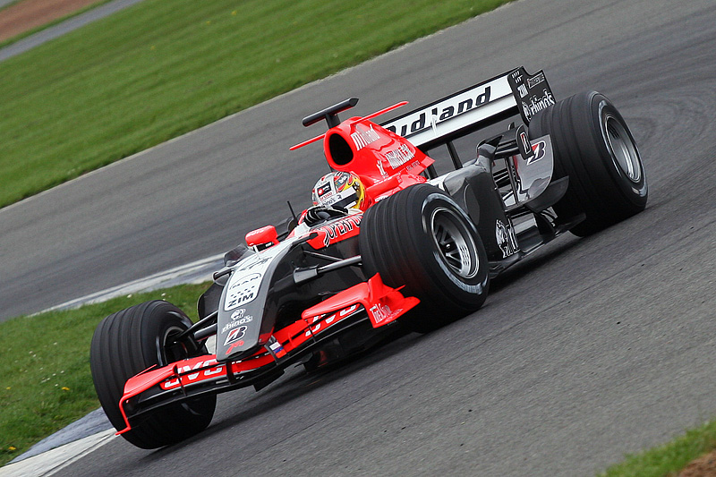
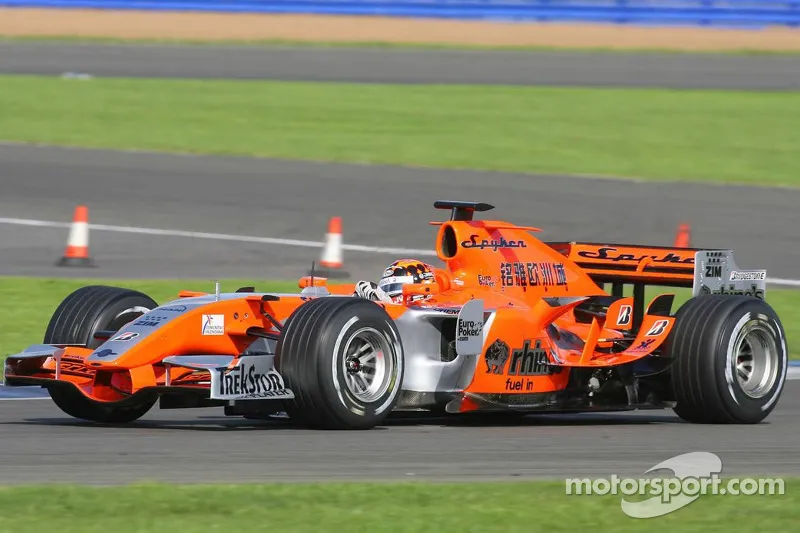
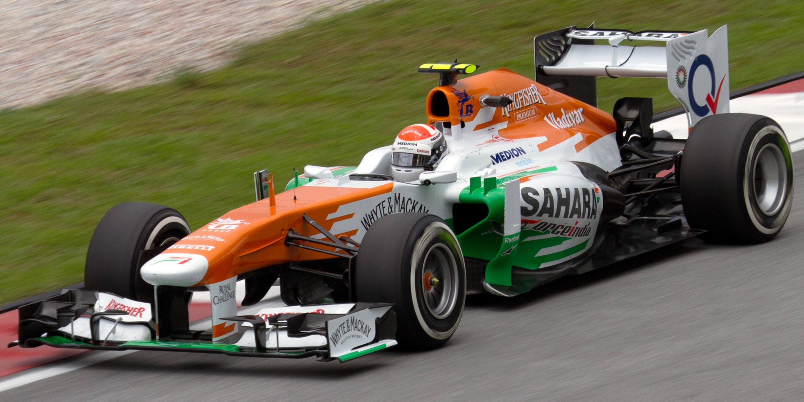

HISTORY
조던에서 애스턴마틴까지, 35년의 레이싱 여정

아일랜드 출신의 에디 조던(Eddie Jordan)이 1991년 설립한 조던 그랑프리는 작은 팀으로 시작해 F1의 강호로 성장했습니다. 에디 조던은 전직 레이서이자 사업가로, 포뮬러 3000에서의 성공을 발판으로 F1에 진출했습니다. 팀의 첫 시즌, 당시 무명이었던 미하엘 슈마허가 데뷔하며 역사적인 순간을 함께했습니다.
주요 드라이버
미하엘 슈마허루벤스 바리첼로에디 어바인데이먼 힐랄프 슈마허하인츠-하랄드 프렌첸지안카를로 피시켈라

러시아-캐나다 사업가 알렉스 쉬나이더가 이끄는 미드랜드 그룹이 조던을 인수하여 MF1 레이싱으로 참가했습니다. 짧은 기간이었지만 팀의 새로운 시작을 알렸습니다. 재정적 어려움으로 인해 시즌 중반 스파이커에 매각되었습니다.
주요 드라이버
티아고 몬테이로크리스티앙 알베르스

네덜란드 스포츠카 제조사 스파이커가 운영했던 시기입니다. 밝은 오렌지색 리버리로 눈길을 끌었으며, 단 1시즌 만에 인도 기업인에게 매각되었습니다.
주요 드라이버
아드리안 수틸크리스티앙 알베르스마르쿠스 빈켈호크사콘 야마모토

비제이 말리야 체제에서 '최고의 가성비 팀'으로 불리며 중상위권의 강자로 군림했습니다.
주요 드라이버
지안카를로 피시켈라아드리안 수틸니코 휠켄베르그세르히오 페레스에스테반 오콘

로렌스 스트롤 컨소시엄이 인수하며 대규모 투자가 시작된 시기입니다. 메르세데스 머신과 유사한 설계로 '핑크 메르세데스'라는 별명을 얻었습니다.
주요 드라이버
세르히오 페레스랜스 스트롤니코 휄켄베르크

1959-60년 이후 61년 만에 애스턴마틴이 F1 워크스 팀으로 복귀했습니다. 브리티시 레이싱 그린 컬러의 머신으로 서킷에 등장한 애스턴마틴은 실버스톤에 최첨단 신사옥과 팩토리를 건설하며 야심찬 프로젝트를 진행 중입니다. 2023년에는 페르난도 알론소를 영입하며 새로운 황금기를 열었습니다.
주요 드라이버
세바스찬 베텔 (2021-2022)랜스 스트롤 (2021-현재)페르난도 알론소 (2023-현재)
35 YEARS OF RACING
조던에서 시작된 이 팀의 여정은 수많은 변화를 거쳐왔지만, 레이싱에 대한 열정과 도전 정신은 변하지 않았습니다. 수많은 전설적인 드라이버들이 이 팀을 거쳐갔고, 그들의 이야기는 F1 역사의 한 페이지를 장식하고 있습니다.